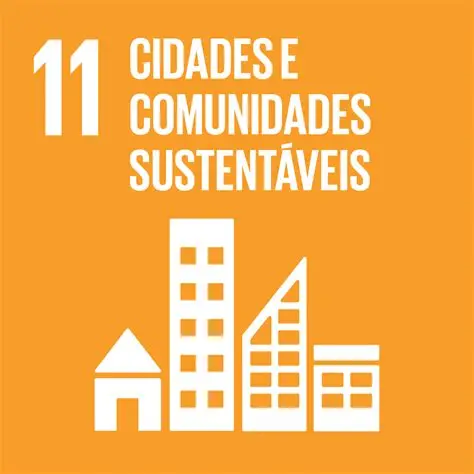

O Objetivo de Desenvolvimento Sustentável, da Agenda 2030 da ONU, busca tornar as cidades e comunidades mais inclusivas, seguras, resilientes e sustentáveis. Seu propósito é garantir que todas as pessoas tenham acesso a moradia adequada, transporte seguro, serviços básicos e espaços públicos de qualidade, promovendo uma vida melhor para todos.

A ODS 11 destaca a importância de garantir acesso à moradia segura, adequada e com preço acessível. Ter um lar digno é um direito fundamental e representa um passo importante para reduzir as desigualdades sociais e construir comunidades mais justas.
Um dos objetivos é proporcionar sistemas de transporte seguros, acessíveis e sustentáveis para todos. Investir em transporte público de qualidade, ciclovias e acessibilidade contribui para melhorar a mobilidade urbana e facilitar o deslocamento da população.
Proteger os patrimônios culturais e naturais é essencial para preservar a história, a identidade e a biodiversidade das cidades. A ODS 11 incentiva ações que valorizem monumentos históricos, espaços culturais, áreas verdes e ambientes naturais.
Busca diminuir os impactos ambientais negativos causados pelas atividades urbanas. Para isso, é importante melhorar a qualidade do ar, realizar o gerenciamento adequado dos resíduos, incentivar a reciclagem e promover práticas que reduzam a poluição.
Enchentes, deslizamentos e outros desastres naturais representam riscos para milhares de pessoas. A ODS 11 incentiva o planejamento urbano e a adoção de medidas preventivas para tornar as cidades mais preparadas e resilientes diante dessas situações.
Concluímos que a ODS 11 é muito importante para o desenvolvimento de cidades e comunidades mais inclusivas, seguras, resilientes e sustentáveis. Por meio dela, entendemos que todos devem ter direito a uma moradia digna, transporte público de qualidade, espaços seguros e acesso aos serviços básicos. Além disso, é fundamental preservar o meio ambiente, proteger o patrimônio cultural e natural, reduzir a poluição e preparar as cidades para enfrentar desastres naturais e mudanças climáticas.
Para alcançar esses objetivos, é necessário o esforço conjunto dos governos e da população, pois pequenas atitudes, como reciclar, cuidar dos espaços públicos e evitar o desperdício, também fazem a diferença. Portanto, construir cidades sustentáveis não é apenas uma responsabilidade do presente, mas um compromisso com as futuras gerações, garantindo uma sociedade com mais qualidade de vida, igualdade, respeito e oportunidades para todos.